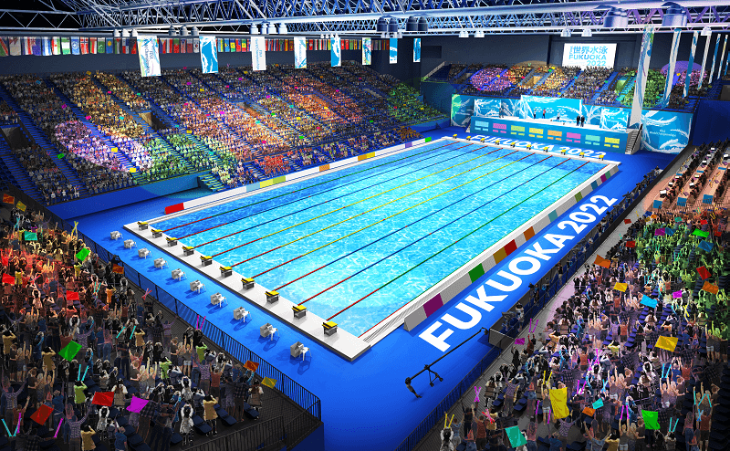
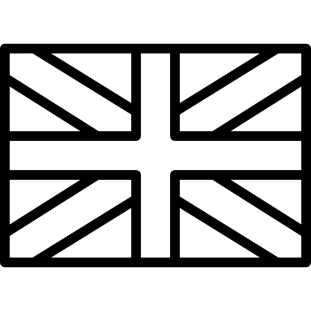

2023年07月23日 競泳競技開始
会場：マリンメッセ福岡A館
日本開催は2001年の福岡大会ぶり
優勝種目は、即パリ五輪代表内定
日水連の目標はメダル５個以上
 スタートの技術と瞬発力が光る
スタートの技術と瞬発力が光る
先行して、前を譲らない力が光る
最後に抜き去る力が光る
中でも一番かっこいい！
成田実生選手
東京五輪金メダリストを破る女子高生
三井愛梨選手
実は今、日本女子で最も表彰台に近いと言われる18歳
池江璃花子選手
白血病を乗り越え、再び五輪の舞台へ
今井月選手
早咲きの岐阜スイマー、6年ぶりの代表獲得
牧野紘子選手
「牧野は2017年だけだった」とは言わせない。
白井璃緒選手
日本選手権8レース目にして執念の代表獲得
本多灯選手
世界のてっぺんを目指し続けるバタフライスイマー。
松元克央選手
次の日本を背負う大エース「カツオ」。
三井愛梨選手
実は今、日本女子で最も表彰台に近いと言われる18歳。
入江陵介選手
100m背泳ぎ、200m背泳ぎの2種目で日本選手権10連覇
ロンドン五輪、北島康介らとのメドレーリレーを含む3つのメダル
引退を考えるも、福岡に向けて再出発を決意。今回も代表キャプテンとして臨む
中距離女子界の三つ巴レデッキ― vsティットマス vsマッキントッシュ
「怪物」と呼ばれたフェルプスに迫るフランスのスイマーマルシャン
昨年、更新不可能と言われた自由形の世界記録を13年ぶりに更新 ポポビッチ
 代表選考の条件「日本選手権にて派遣標準記録突破かつ2位以内」
代表選考の条件「日本選手権にて派遣標準記録突破かつ2位以内」
パリ五輪標準（速め）と福岡標準（遅め）が存在し、日本選手権は前者基準で実施
日本選手権終了後に「追加選抜」という形で福岡標準を切った選手が内定
アダム・ピーティ (Adam Peaty)選手
100m平泳ぎの世界記録保持者でリオ・東京五輪金メダリスト
「この競技でやりたかったことは、全部やったのになぜまだ戦うの？」
それでも、3大会連続の金メダルを目指してパリ五輪へ。
| 大会1日目 |
|---|
| 07/23(日) |
 400m自由形 400m自由形 400m自由形400m個人メドレー4×100m Fr R4×100m Fr R 400m自由形400m個人メドレー4×100m Fr R4×100m Fr R
|
| 大会2日目 |
|---|
| 07/24(月) |
|
100m平泳ぎ100mバタフライ50mバタフライ200m個人メドレー
|
| 大会3日目 |
|---|
| 07/25(火) |
|
200m自由形1500m自由形100m背泳ぎ100m背泳ぎ100m平泳ぎ
|
| 大会4日目 |
|---|
| 07/26(水) |
800m自由形200m自由形200mバタフライ50m平泳ぎ 4×100m Med R 4×100m Med R
|
| 大会5日目 |
|---|
| 07/27(木) |
|
200mバタフライ100m自由形50m背泳ぎ200m個人メドレー4×200m Fr R
|
| 大会6日目 |
|---|
| 07/28(金) |
|
100m自由形200m平泳ぎ200m背泳ぎ200m平泳ぎ4×200m Fr R
|
| 大会7日目 |
|---|
| 07/29(土) |
|
50mバタフライ50m自由形100mバタフライ200m背泳ぎ800m自由形4×100m Fr R
|
| 大会8日目 |
|---|
| 07/30(日) |
|
50m背泳ぎ50m平泳ぎ1500m自由形400m個人メドレー4×100m Med R4×100m Med R
|